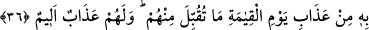

feth nasip oldu. İşin hakîkatinin keşfolunması için her şeyden alâkayı kesmek gerekir.
Hâfız der ki:
Ömrü ve malı dost yolunda feda etmedik, yazık!
Çünkü aşk yolunda bu kadarcık bir fedakarlık bizden çıkmıyor
Hayırlı ve salih kimselerle bir arada bulunmakta büyük bir şeref ve saâdet vardır.
Hikâye edildiğine göre Şeyh Ebû Yezîd el-Bestamî’nin hizmetçisi Mağripli bir adam
idi. Onun yanında Münker ve Nekir hakkında sohbet cereyân etti. Mağripli hizmetçi
“Allah’a yemin olsun eğer Münker-Nekir bana sual sorarsa onlara söyleyeceğim şeyi
biliyorum.” deyince yanındakiler: “Bu nereden bilinebilir ki?” dediler. Mağripli
hizmetçi onlara: “Benim mezarımın başına oturursanız bunu duyarsınız.” dedi.
Hizmetçi vefât ettiği zaman, onun kabrinin başına oturdular ve onun şöyle dediğini
duydular: “Bana sual mi soruyorsunuz? Ben Ebû Yezid’in cübbesini boynumda taşımış
insanım.” Gerçekten de bunu söyleyince melekler oradan geçip gittiler.
Buna benzer şeyleri uzak görme. Çünkü Allah Teâlâ’nın meleklerinin sualine çok ince
cevap hazırlayanların cevâbı, kendisiyle beraber bu dünyâdan gider. İşte hikâyedeki
gibi azık dünyâda iken hâsıl olur.
Mesnevî’de şöyle denilmektedir:
Allah’ın bağışladığı altın, sen ölüp kumlar altında yatsan da,
Seninledir, başkalarına nasip olacak miras değil
Tanrı malı, adım adım cenazenin önünden gider
Kabirde sana gurbet arkadaşı olur
36- Şüphe yok ki kâfir olanlar, yeryüzündeki her şey ve bunun yanında da bir o
kadarı kendilerinin olsa da kıyâmet gününün azabından kurtulmak için onları fidye
verseler onlardan asla kabul edilmez; onlar için acı bir azap vardır.
“Şüphe yok ki kâfir”lerin her biri “yeryüzündeki her şey” yani yeryüzündeki sınıf
sınıf mallar, rezervler ve diğer faydalı şeyler “ve bunun yanında da bir o kadarı daha
kendilerinin olsa da kıyâmet gününün azâbından kurtulmak için onları fidye
verseler” Yani eğer yeryüzünde olanların hepsi ve onun bir katı onlar için olsa ve bunu
kıyâmet gününde karşılaşacakları azaptan kendilerini kurtarmak için fidye olarak